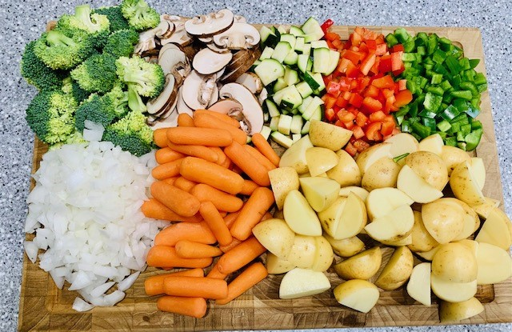
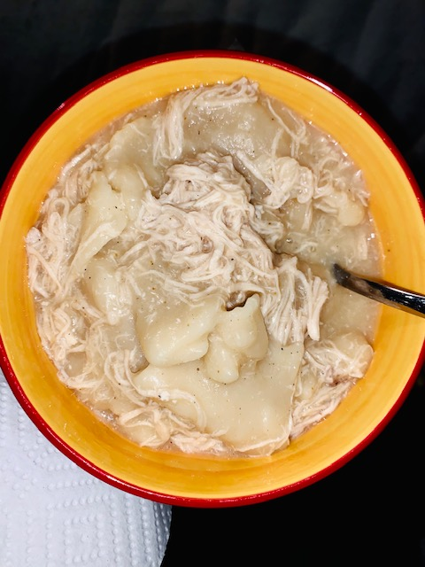

Beef Stew

Ingredients
- 1 lb of stew meat
- 2 - 14.5oz cans of whole peeled tomatoes
- 1 qt of beef broth
- 1 - 14.5oz can of corn
- 1 - 14.5oz can of green beans
- 1 packet of brown gravy
- 1 packet of french onion soup mix
- 1 zuchinni - diced
- 1 onion - diced
- 1 head of brocolli - diced
- 1 bag of baby carrots
- 8oz of baby bella mushrooms
- half a green pepper - diced
- half a red pepper - diced
- 2lb of baby potatoes - cut in half
- salt and pepper, to taste
Instructions
- Chop up all veggies
- Brown the stew meat in a hot skillet, till golden brown on all sides.
- Place veggies (except for mushrooms and onions) and beef into crockpot.
- Sautee onions and mushrooms in the same skillet you browned the beef, about 5 minutes.
- Pour red wine into the skillet.
- Cook until the alcohol has cooked off, about a couple minutes on med-high heat.
- Pour beef broth and wine into crockpot.
- Add the packet seasonings, canned tomatoes, corn, and greenbeans
- Cook on low for 8-10 hours
Back to Top
Baked Chicken Tacos
Ingredients
- 4oz can of green chiles
- 4oz can of adobe chipotle peppers
- 1 TBL garlic powder
- 1 TBL onion powder
- 1.5 lb of boneless chicken breasts
- 1 - 14.5 oz can of refried beans
- 4oz of shredded mexican cheese
- 10 stand up taco shells
- 6oz of salsa ( I used medium)
- salt and pepper, to taste
- Toppings: sour cream , avocado, red onion, and more CHEESE
Instructions
- Combine the chicken, green chiles, adobe peppers, garlic and onion powder
into a gallon size bag.
- Marinade in the fridge for a minimum of 15 minutes
- Pour the marinaded chicken into the instapot
- Cook on manual for 25 minutes
- Bake chicken at 375oF for 30 mintes, if you
don't own an instapot
- Once chicken is cooked, use forks to shred the chicken, set aside
- Preheat oven to 375oF
- Spread refriend beans at the bottom of each taco shell
- Top each shell with shredded chicken
- Sprinkle some salsa and top with shredded cheese
- Bake for 20-30 minutes, until cheese has melted
- Top your taco with your favorite toppings!
Back to Top
Crispy Onion Chicken
Ingredients
- 2 lb of boneless chicken breasts, cut length-wise
- 3-4 large eggs
- onion powder
- 1 cup of all-purpse flour
- 1 container of crispy fried onions
- salt and pepper, to taste
Instructions
- Preheat oven to 375oF
- Grab 3 shallow dishes
- Place the flour, eggs (whisked), and fried onions into each of the dishes
- Lightly season each chicken breast with salt, pepper, and onion powder
- One by one, coat each chicken breast with flour, then into the eggs mixture,
then into the fried onions.
- Place chicken on a baking sheet
- Bake chicken for 30 minutes, until golden brown and crispy
- If using airfyer, fry at 375oF for 20 minutes. Flip
each breast after 10 minutes
Back to Top
Chicken and Dumplings

Ingredients
- 2 cups of flour
- 1/2 tsp of baking powder
- 1 pinch of salt
- 2 tbl of butter, unsalted
- 1 cup of milk
- 2 qt of chicken broth
- 3 cups of cooked chicken
Instructions
- In a bowl combine the flour, baking powder, and salt
- Cut the butter into the dry ingredients with a fork
- Stir in milk and form dough into a ball
- Heavily flour a surface for rolling out the dough and flour the rolling pin
- Roll out the dough to about 2/3 the size of a cookie sheet, keeping
it heavily floured
- Bring broth to a boil
- While the broth is at a slow boil, tear pieces from the rolled-out
dough, approx 1 inch square
- Keep coating the pieces with flour and drop into slow boiling broth
- The extra flour will thicken up the broth
- Add the chicken and let it simmer for about 30 minutes, covered
Back to Top
Chili

Ingredients
- 1 lb ground beef or turkey, I used turkey
- 1 - 14.5oz can of pinto or kidney beans
- 1 can of mushrooms
- 1 large yellow onion, diced
- 2 cans of rotel
- 2 - 32oz cans of whole peeled tomatoes
- 4 - 1oz packets of Bloomers chili powder
- 2 cartons of Bloomers chili base, 1 mild and 1 hot
- salt and pepper
Instructions
- Cook ground turkey (or beef) with onions. Drain excess fat
- Add Bloomers base and simmer for 20 minutes
- Add all cans to a dutch oven pot
- Add chili packets and the ground turkey with onions
- Bring to a boil and stir often
- Let it simmer on low for 2 hours
- Add your favorite toppings!
Back to Top
Spicy Chicken Pesto Pasta

Ingredients
- 1/4 cup olive oil
- 1 tbl minced garlic
- 1/4 yellow onlin, chopped finely
- 2 tsp crushed red pepper flakes
- 1/2 cup tomato paste
- 1/4 cup vodka
- 3/4 cup basil pesto, I used store-bought
- 1 cup milk
- 1 lb pasta of your choice, I used ziti
- 3 tbl salted butter
- 1/3 cup grated Parmesan cheese
- 1/4 cup basil, roughly chopped
- 2 cups cooked shredded chicken
Instructions
- Heat a large skillet with the olive oil and add onions and garlic
- Cook on a medium-low heat, until onions are translucent
- Reduce the heat to low, and add the tomato paste and red pepper flakes
- Cook for 3 minutes and pour the vodka in.
- Let it cook off for about 2 minutes until the alcohol has evaporated
- Stir in the milk and pesto and let it simmer for a few minutes
- Meanwhile salt a large stock pot of water and bring to a boil
- Cook the pasta to your liking and reserve about 1-1/2 cups of pasta water
- Add the pasta water to the pesto sauce, little by little, until you get a creamy texture
- Finish with the butter, parmesan, and basil
- Toss the pasta and shredded chicken into the sauce
- Top with extra Parmesan and basil
Back to Top
Enjoy!